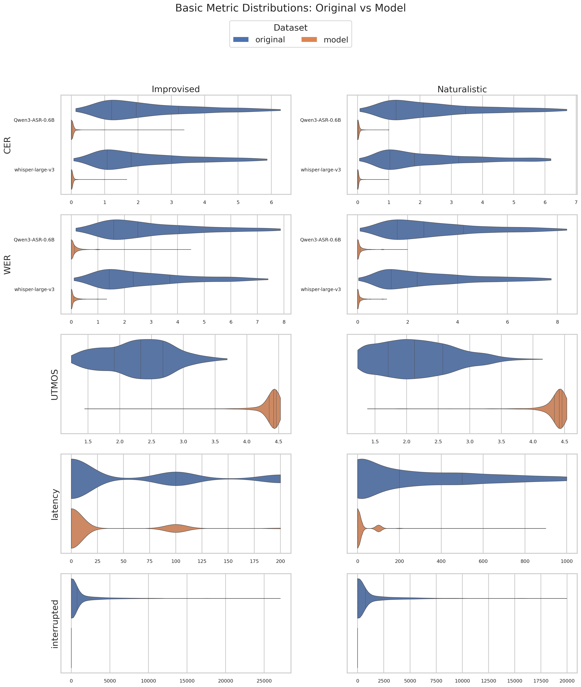
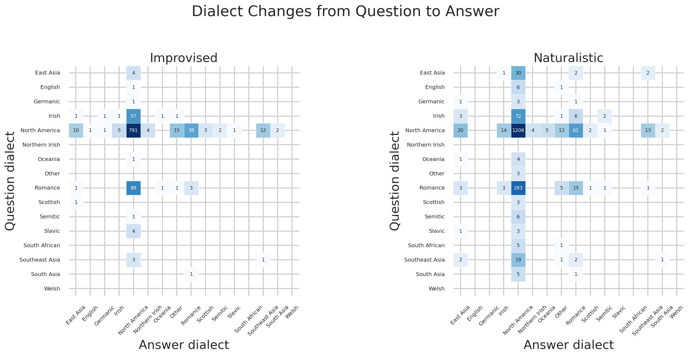
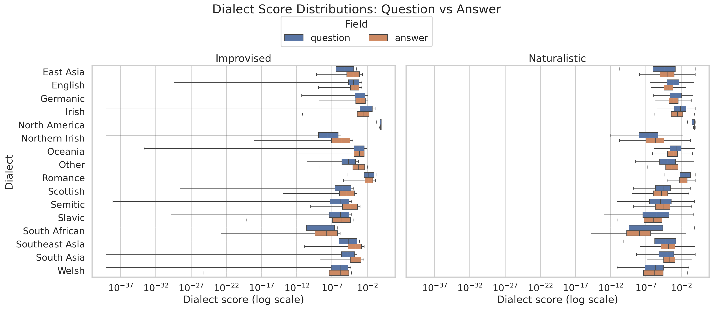
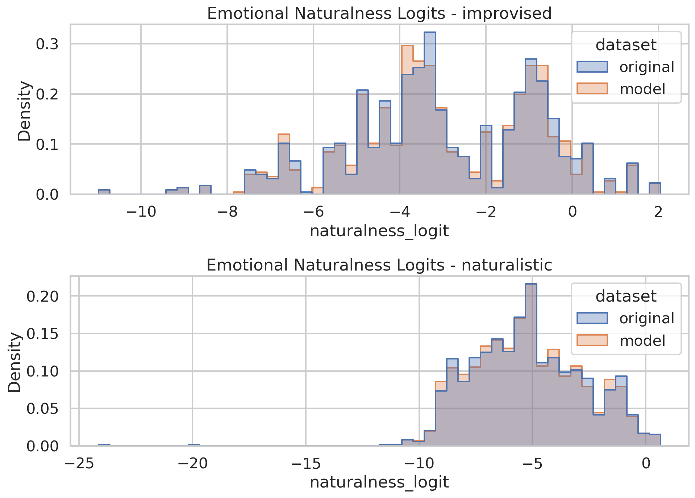
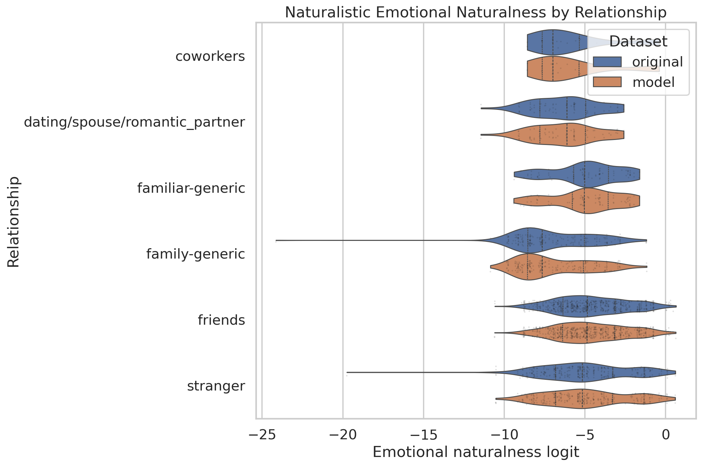
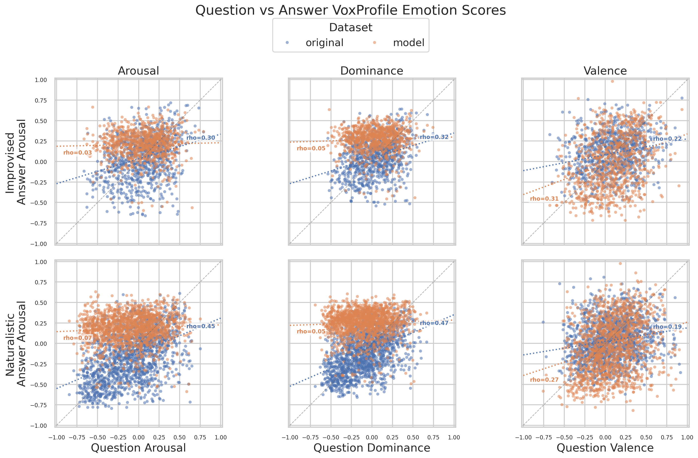
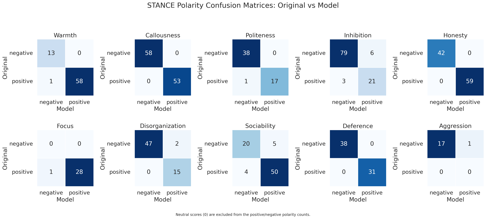
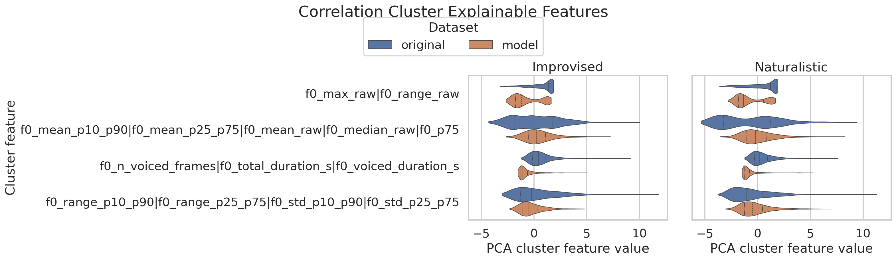
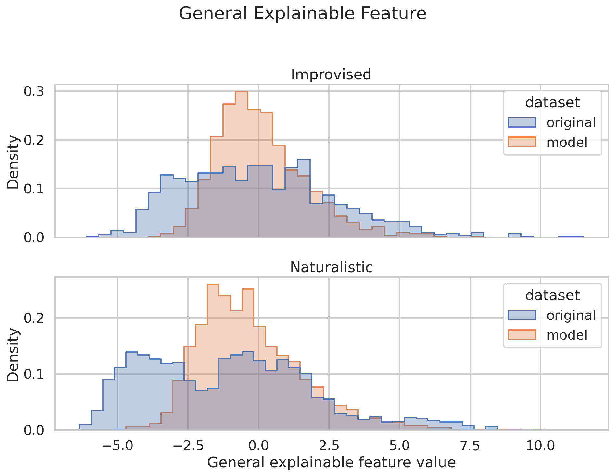
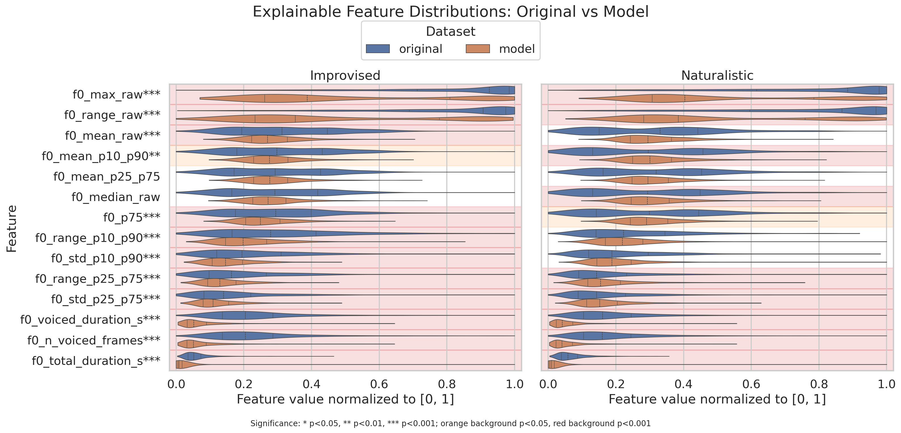

Executive Summary
This report combines the simplified text report, Stage 1 metric tables, and Stage 2 figures into a browsable HTML document.
Improvised
Emotional naturalness diff: -0.0193 (p=0.6539)
Basic metrics: 8 metrics summarized
Language ID: English language detected in original answers (%): 98.1771%; English language detected in model answers (%): 92.0139%
Dialect ID: 32 dialect percentage rows
Mean STANCE diff: 0.0192 across 10 stances
Best explainable AUROC: f0_total_duration_s (0.9388)
Naturalistic
Emotional naturalness diff: 0.0056 (p=0.8182)
Basic metrics: 8 metrics summarized
Language ID: English language detected in original answers (%): 97.6167%; English language detected in model answers (%): 89.5914%
Dialect ID: 32 dialect percentage rows
Best explainable AUROC: f0_total_duration_s (0.9421)
Basic Metrics
Basic metrics come from script 10 and include ASR-specific CER/WER columns, UTMOS, latency, interruption counts, and interruption overlap duration when available. If original base metrics were not generated, the table reports model means and standard deviations.
| subset | metric | mean_diff | std_diff | p_value | n | detail |
|---|---|---|---|---|---|---|
| improvised | CER_Qwen3-ASR-0.6B | -4.5417 | 5.4938 | 0.0000 | 1151 | model-original mean difference; p-value is Mann-Whitney U Test |
| improvised | CER_whisper-large-v3 | -4.2840 | 5.1899 | 0.0000 | 1152 | model-original mean difference; p-value is Mann-Whitney U Test |
| improvised | WER_Qwen3-ASR-0.6B | -5.5781 | 6.7288 | 0.0000 | 1151 | model-original mean difference; p-value is Mann-Whitney U Test |
| improvised | WER_whisper-large-v3 | -5.2506 | 6.2938 | 0.0000 | 1152 | model-original mean difference; p-value is Mann-Whitney U Test |
| improvised | UTMOS | 2.0530 | 0.5905 | 0.0000 | 1152 | model-original mean difference; p-value is Mann-Whitney U Test |
| improvised | latency | -369.7049 | 987.6310 | 8.422e-99 | 1152 | model-original mean difference; p-value is Mann-Whitney U Test |
| improvised | interrupted | -1000.6181 | 2402.3845 | 8.784e-132 | 1152 | model-original mean difference; p-value is Mann-Whitney U Test; interrupted overlap duration in ms, with 0 for non-interruptions |
| improvised | interruptions count | -481.0000 | 1152 | model-original interruption count difference; model_count=0; original_count=481 | ||
| naturalistic | CER_Qwen3-ASR-0.6B | -5.0247 | 6.5033 | 0.0000 | 2054 | model-original mean difference; p-value is Mann-Whitney U Test |
| naturalistic | CER_whisper-large-v3 | -4.5992 | 5.8761 | 0.0000 | 2056 | model-original mean difference; p-value is Mann-Whitney U Test |
| naturalistic | WER_Qwen3-ASR-0.6B | -6.0277 | 7.7234 | 0.0000 | 2054 | model-original mean difference; p-value is Mann-Whitney U Test |
| naturalistic | WER_whisper-large-v3 | -5.5349 | 6.9826 | 0.0000 | 2056 | model-original mean difference; p-value is Mann-Whitney U Test |
| naturalistic | UTMOS | 2.1577 | 0.6823 | 0.0000 | 2056 | model-original mean difference; p-value is Mann-Whitney U Test |
| naturalistic | latency | -923.7354 | 1771.4840 | 0.0000 | 2056 | model-original mean difference; p-value is Mann-Whitney U Test |
| naturalistic | interrupted | -1008.9844 | 2433.7838 | 1.767e-218 | 2056 | model-original mean difference; p-value is Mann-Whitney U Test; interrupted overlap duration in ms, with 0 for non-interruptions |
| naturalistic | interruptions count | -812.0000 | 2056 | model-original interruption count difference; model_count=0; original_count=812 |

Basic metric histogram gallery


Language ID
Language ID reports the percentage of answer audio rows whose detected language is English (eng) in language_id.csv.
| subset | % Eng in models' answers | % Eng in original answers |
|---|---|---|
| improvised | 92.013889 | 98.177083 |
| naturalistic | 89.591440 | 97.616732 |
Dialect ID
Dialect ID reports the percentage of question and answer rows assigned to each VoxLect dialect class. The confusion matrix counts question-to-answer dialect changes; the box plot compares the full question and answer score vectors for each class.
| Subset | Question/Answer | East Asia | English | Germanic | Irish | North America | Northern Irish | Oceania | Other | Romance | Scottish | Semitic | Slavic | South African | Southeast Asia | South Asia | Welsh |
|---|---|---|---|---|---|---|---|---|---|---|---|---|---|---|---|---|---|
| improvised | Question | 0.347222 | 0.086806 | 0.086806 | 5.381944 | 76.822917 | 0.000000 | 0.086806 | 0.000000 | 8.246528 | 0.086806 | 0.086806 | 0.347222 | 0.000000 | 0.347222 | 0.086806 | 0.0 |
| improvised | Answer | 1.226415 | 0.094340 | 0.188679 | 0.566038 | 89.811321 | 0.377358 | 0.188679 | 1.603774 | 3.962264 | 0.283019 | 0.188679 | 0.094340 | 0.000000 | 1.226415 | 0.188679 | 0.0 |
| naturalistic | Question | 1.702335 | 0.340467 | 0.243191 | 4.085603 | 65.223735 | 0.000000 | 0.243191 | 0.145914 | 15.175097 | 0.145914 | 0.291829 | 0.194553 | 0.291829 | 1.215953 | 0.291829 | 0.0 |
| naturalistic | Answer | 1.682953 | 0.000000 | 0.000000 | 0.977199 | 89.467970 | 0.217155 | 0.271444 | 1.194354 | 4.777416 | 0.162866 | 0.217155 | 0.000000 | 0.000000 | 0.868621 | 0.162866 | 0.0 |


Emotional Naturalness
Naturalness is summarized as the paired test-set logit difference between model and original utterances. Positive values mean higher model logits than original logits.
| subset | metric | mean_diff | std_diff | p_value | n |
|---|---|---|---|---|---|
| improvised | Emotional naturalness | -0.0193 | 0.0342 | 0.6539 | 867 |
| improvised | Emotional naturalness by relationship: collaborative_storytelling | -1.020e-04 | 4 | ||
| improvised | Emotional naturalness by relationship: grounded_gesture | -0.0195 | 8 | ||
| improvised | Emotional naturalness by relationship: ipc_conversation | -0.0105 | 18 | ||
| improvised | Emotional naturalness by relationship: stranger | -0.0196 | 837 | ||
| naturalistic | Emotional naturalness | 0.0056 | 0.5726 | 0.8182 | 1455 |
| naturalistic | Emotional naturalness by relationship: collaborative_storytelling | -0.0409 | 5 | ||
| naturalistic | Emotional naturalness by relationship: coworkers | -0.0087 | 27 | ||
| naturalistic | Emotional naturalness by relationship: dating/spouse/romantic_partner | -0.0119 | 79 | ||
| naturalistic | Emotional naturalness by relationship: familiar-generic | -0.0224 | 87 | ||
| naturalistic | Emotional naturalness by relationship: family-generic | 0.0548 | 214 | ||
| naturalistic | Emotional naturalness by relationship: friends | -0.0143 | 645 | ||
| naturalistic | Emotional naturalness by relationship: grounded_gesture | -0.0293 | 19 | ||
| naturalistic | Emotional naturalness by relationship: ipc_conversation | -0.0252 | 46 | ||
| naturalistic | Emotional naturalness by relationship: stranger | 0.0320 | 333 |

The relationship violin plot breaks naturalistic emotional naturalness logits down by relationship label.

The emotion scatter plot compares full-question and full-answer Arousal, Dominance, and Valence scores normalized to [-1, 1]. Dotted lines show per-dataset correlations with rho labels.

STANCEs
STANCE metrics compare LLM and original scores for each STANCE question. Naturalistic STANCEs are omitted because they are not computed in this benchmark pipeline.
| subset | metric | mean_diff | std_diff | p_value | n | detail |
|---|---|---|---|---|---|---|
| improvised | STANCE same sign (%) | 96.6102 | 708 | percentage of valid paired rows where score_original and score_llm have the same sign, with zero treated as neutral; numerator=684; denominator=708 | ||
| improvised | STANCE model positive when original negative (%) | 3.8251 | 366 | percentage among valid paired rows with score_original < 0; numerator=14; denominator=366 | ||
| improvised | STANCE model negative when original positive (%) | 2.9240 | 342 | percentage among valid paired rows with score_original > 0; numerator=10; denominator=342 | ||
| improvised | Q0 | -0.0556 | 0.4714 | 0.8338 | 72 | Based on the audio, does the TARGET speaker sound warm and affiliative, or cold and detached? |
| improvised | Q1 | 0.0090 | 0.0949 | 0.9500 | 111 | Based on the audio, does the TARGET speaker sound compassionate and supportive, or callous and unsympathetic? |
| improvised | Q2 | -0.0536 | 0.5533 | 0.9513 | 56 | Based on the audio, does the TARGET speaker sound polite and respectful, or rude and disrespectful? |
| improvised | Q3 | 0.1009 | 0.9713 | 0.6633 | 109 | Based on the audio, does the TARGET speaker sound assertive and self-confident, or hesitant and inhibited? |
| improvised | Q4 | 0.0000 | 0.0000 | 1.0000 | 101 | Based on the audio, does the TARGET speaker sound straightforward and sincere, or sly and manipulative? |
| improvised | Q5 | -0.1379 | 0.7428 | 0.3343 | 29 | Based on the audio, does the TARGET speaker sound attentive and focused, or confused and distracted? |
| improvised | Q6 | 0.1406 | 0.6391 | 0.5843 | 64 | Based on the audio, does the TARGET speaker sound organized and goal-driven, or disorganized and unmotivated? |
| improvised | Q7 | 0.0506 | 1.3578 | 0.8656 | 79 | Based on the audio, does the TARGET speaker sound socially engaged and expressive with the other speaker, or withdrawn and disengaged? |
| improvised | Q8 | -0.0290 | 0.1690 | 0.8675 | 69 | Based on the audio, does the TARGET speaker accommodate and yield to the other speaker’s preferences, or do they try to control and dominate? |
| improvised | Q9 | 0.1667 | 0.7071 | 0.3449 | 18 | Based on the audio, does the TARGET speaker stay calm and avoid confrontation, or are they hostile and aggressive? |

Explainable Features
Explainable feature rows report model-minus-original mean differences, p-values, and the Stage 41 classification AUROC/accuracy. Correlation-cluster rows come from script 41 PCA cluster features.
Correlation Cluster Features
| subset | metric | mean_diff | std_diff | p_value | n | detail |
|---|---|---|---|---|---|---|
| improvised | corr_cluster_001_rho0p8 | -1.5678 | 1.7354 | 1.617e-158 | 1152 | script 41 PCA cluster feature model-original; p-value is Mann-Whitney U Test; source_features=f0_max_raw|f0_range_raw; validates_in_test=True; test_mean_abs_spearman=0.9829; pca_explained_variance_ratio=0.9977 |
| improvised | corr_cluster_002_rho0p8 | 0.3062 | 2.5687 | 4.768e-06 | 1152 | script 41 PCA cluster feature model-original; p-value is Mann-Whitney U Test; source_features=f0_mean_p10_p90|f0_mean_p25_p75|f0_mean_raw|f0_median_raw|f0_p75; validates_in_test=True; test_mean_abs_spearman=0.9657; pca_explained_variance_ratio=0.9795 |
| improvised | corr_cluster_003_rho0p8 | -1.4619 | 1.4081 | 3.884e-259 | 1152 | script 41 PCA cluster feature model-original; p-value is Mann-Whitney U Test; source_features=f0_n_voiced_frames|f0_total_duration_s|f0_voiced_duration_s; validates_in_test=True; test_mean_abs_spearman=0.9579; pca_explained_variance_ratio=0.7287 |
| improvised | corr_cluster_004_rho0p8 | -0.5084 | 2.3843 | 0.0020 | 1152 | script 41 PCA cluster feature model-original; p-value is Mann-Whitney U Test; source_features=f0_range_p10_p90|f0_range_p25_p75|f0_std_p10_p90|f0_std_p25_p75; validates_in_test=True; test_mean_abs_spearman=0.9310; pca_explained_variance_ratio=0.9516 |
| improvised | general_explainable_feature_rho0p8 | 0.1011 | 3.1147 | 0.0128 | 1152 | script 41 PCA cluster feature model-original; p-value is Mann-Whitney U Test; source_features=corr_cluster_001_rho0p8|corr_cluster_002_rho0p8|corr_cluster_003_rho0p8|corr_cluster_004_rho0p8; validates_in_test=True; test_mean_abs_spearman=nan; pca_explained_variance_ratio=0.5932 |
| naturalistic | corr_cluster_001_rho0p8 | -1.4000 | 1.9084 | 6.210e-208 | 2056 | script 41 PCA cluster feature model-original; p-value is Mann-Whitney U Test; source_features=f0_max_raw|f0_range_raw; validates_in_test=True; test_mean_abs_spearman=0.9894; pca_explained_variance_ratio=0.9978 |
| naturalistic | corr_cluster_002_rho0p8 | 0.7707 | 3.1735 | 8.955e-27 | 2056 | script 41 PCA cluster feature model-original; p-value is Mann-Whitney U Test; source_features=f0_mean_p10_p90|f0_mean_p25_p75|f0_mean_raw|f0_median_raw|f0_p75; validates_in_test=True; test_mean_abs_spearman=0.9741; pca_explained_variance_ratio=0.9704 |
| naturalistic | corr_cluster_003_rho0p8 | -1.3417 | 1.3639 | 0.0000 | 2056 | script 41 PCA cluster feature model-original; p-value is Mann-Whitney U Test; source_features=f0_n_voiced_frames|f0_total_duration_s|f0_voiced_duration_s; validates_in_test=True; test_mean_abs_spearman=0.9530; pca_explained_variance_ratio=0.7915 |
| naturalistic | corr_cluster_004_rho0p8 | 0.3107 | 2.4788 | 4.813e-30 | 2056 | script 41 PCA cluster feature model-original; p-value is Mann-Whitney U Test; source_features=f0_range_p10_p90|f0_range_p25_p75|f0_std_p10_p90|f0_std_p25_p75; validates_in_test=True; test_mean_abs_spearman=0.9191; pca_explained_variance_ratio=0.9157 |
| naturalistic | general_explainable_feature_rho0p8 | 0.7798 | 3.5314 | 7.222e-27 | 2056 | script 41 PCA cluster feature model-original; p-value is Mann-Whitney U Test; source_features=corr_cluster_001_rho0p8|corr_cluster_002_rho0p8|corr_cluster_003_rho0p8|corr_cluster_004_rho0p8; validates_in_test=True; test_mean_abs_spearman=nan; pca_explained_variance_ratio=0.5212 |


Improvised
Highest AUROC Features
| metric | mean_diff | std_diff | p_value | n | auroc | accuracy |
|---|---|---|---|---|---|---|
| f0_total_duration_s | -11.7511 | 36.6386 | 2.807e-291 | 1152 | 0.9388 | 0.7747 |
| f0_n_voiced_frames | -724.7839 | 696.6619 | 1.003e-254 | 1152 | 0.9101 | 0.8077 |
| f0_voiced_duration_s | -7.2413 | 6.9675 | 2.267e-254 | 1152 | 0.9099 | 0.8073 |
| f0_range_raw | -129.2472 | 141.7270 | 7.844e-150 | 1151 | 0.8137 | 0.7534 |
| f0_max_raw | -122.6103 | 139.6983 | 2.510e-139 | 1151 | 0.8024 | 0.7512 |
| f0_max_raw | -122.6103 | 139.6983 | 2.510e-139 | 1151 | 0.8024 | 0.7512 |
| f0_range_p10_p90 | -30.9889 | 68.4434 | 9.806e-34 | 1151 | 0.6457 | 0.6162 |
| f0_range_p10_p90 | -30.9889 | 68.4434 | 9.806e-34 | 1151 | 0.6457 | 0.6162 |
| f0_std_p10_p90 | -7.9840 | 19.4295 | 7.112e-27 | 1151 | 0.6292 | 0.6066 |
| f0_std_p10_p90 | -7.9840 | 19.4295 | 7.112e-27 | 1151 | 0.6292 | 0.6066 |
Lowest AUROC Features
| metric | mean_diff | std_diff | p_value | n | auroc | accuracy |
|---|---|---|---|---|---|---|
| f0_mean_raw | -11.4117 | 45.8144 | 3.197e-09 | 1151 | 0.4287 | 0.4655 |
| f0_p75 | -14.0235 | 61.3178 | 6.341e-09 | 1151 | 0.4301 | 0.4512 |
| f0_mean_p10_p90 | -6.9922 | 46.4591 | 0.0029 | 1151 | 0.4641 | 0.4950 |
| f0_mean_p25_p75 | -4.6877 | 46.2279 | 0.0939 | 1151 | 0.4798 | 0.5085 |
| f0_median_raw | -3.8950 | 46.3647 | 0.1496 | 1151 | 0.4827 | 0.5119 |
| f0_median_raw | -3.8950 | 46.3647 | 0.1496 | 1151 | 0.4827 | 0.5119 |
| f0_std_p25_p75 | -4.1851 | 12.4295 | 6.959e-17 | 1151 | 0.6005 | 0.5957 |
| f0_std_p25_p75 | -4.1851 | 12.4295 | 6.959e-17 | 1151 | 0.6005 | 0.5957 |
| f0_range_p25_p75 | -14.4184 | 41.2021 | 7.151e-18 | 1151 | 0.6036 | 0.5931 |
| f0_range_p25_p75 | -14.4184 | 41.2021 | 7.151e-18 | 1151 | 0.6036 | 0.5931 |
Naturalistic
Highest AUROC Features
| metric | mean_diff | std_diff | p_value | n | auroc | accuracy |
|---|---|---|---|---|---|---|
| f0_total_duration_s | -14.2971 | 37.7491 | 0.0000 | 2056 | 0.9421 | 0.7646 |
| f0_n_voiced_frames | -749.5885 | 771.2207 | 0.0000 | 2056 | 0.8985 | 0.7626 |
| f0_voiced_duration_s | -7.4876 | 7.7134 | 0.0000 | 2056 | 0.8981 | 0.7624 |
| f0_range_raw | -115.2165 | 153.5466 | 1.842e-202 | 2055 | 0.7734 | 0.7081 |
| f0_max_raw | -107.8581 | 151.2164 | 1.445e-184 | 2055 | 0.7609 | 0.7081 |
| f0_max_raw | -107.8581 | 151.2164 | 1.445e-184 | 2055 | 0.7609 | 0.7081 |
| f0_median_raw | 1.6096 | 51.0438 | 1.315e-04 | 2055 | 0.5344 | 0.4865 |
| f0_median_raw | 1.6096 | 51.0438 | 1.315e-04 | 2055 | 0.5344 | 0.4865 |
| f0_mean_p25_p75 | 0.9621 | 50.5719 | 6.487e-04 | 2055 | 0.5307 | 0.4833 |
| f0_mean_p25_p75 | 0.9621 | 50.5719 | 6.487e-04 | 2055 | 0.5307 | 0.4833 |
Lowest AUROC Features
| metric | mean_diff | std_diff | p_value | n | auroc | accuracy |
|---|---|---|---|---|---|---|
| f0_std_p25_p75 | -0.5190 | 10.8058 | 9.339e-07 | 2055 | 0.4558 | 0.5021 |
| f0_range_p25_p75 | -1.7425 | 35.0286 | 4.965e-05 | 2055 | 0.4635 | 0.5052 |
| f0_mean_p10_p90 | -0.7597 | 50.2918 | 0.0281 | 2055 | 0.4802 | 0.4602 |
| f0_p75 | -1.7257 | 61.3979 | 0.5164 | 2055 | 0.4942 | 0.5505 |
| f0_std_p10_p90 | -1.8613 | 16.9331 | 0.6698 | 2055 | 0.4962 | 0.5286 |
| f0_std_p10_p90 | -1.8613 | 16.9331 | 0.6698 | 2055 | 0.4962 | 0.5286 |
| f0_mean_raw | -4.0261 | 49.3764 | 0.6862 | 2055 | 0.5036 | 0.5439 |
| f0_mean_raw | -4.0261 | 49.3764 | 0.6862 | 2055 | 0.5036 | 0.5439 |
| f0_range_p10_p90 | -9.3201 | 61.9043 | 0.0932 | 2055 | 0.5151 | 0.5410 |
| f0_range_p10_p90 | -9.3201 | 61.9043 | 0.0932 | 2055 | 0.5151 | 0.5410 |

Per-feature histogram gallery